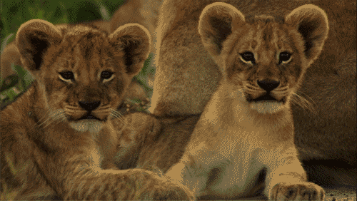

After one to two years of nomadic life these young males drive out the resident males of a pride and take over the females.
secret of jungleDo You Want To Know About Animals???????
Wild Cat

Do you Know !!!
A lion may sleep up to 20 hours a day.
A lion’s heels don’t touch the ground when it walks.
A good gauge of a male lion’s age is the darkness of his mane. The darker the mane, the older the lion. A lion can run for short distances at 50 mph and leap as far as 36 feet.
A lion’s roar can be heard from as far as 5 miles away.
Read MoreSharks....

Do you Know !!!
Hammerhead is also one kind of shark
Sharks do not have a single bone in their bodies. Their skeletons are made of cartilage.
Hammerhead sharks are born with soft heads so they won’t jam their mothers’ birth canals
Sharks have outstanding hearing. They can hear a fish thrashing in the water from as far as 500 metres away!
Read MoreSnakes

Do you Know !!!
Snakes range in size from the tiny, 10 cm-long thread snake, to the reticulated python of up to 6.95 meters (22.8 ft) in length.
Snakes eat there one child to reduse their strength Snakes don’t have eyelids.
Snakes used in snake charming performances respond to movement, not sound.
There are around 3000 different species of snake.
Read More